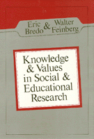

<body bgcolor="#FFFFFF" text="#000000" link="#0000FF" vlink="#CC0000" alink="#CC0000"><center><hr width="350" size="1" align="center" noshade>Key essays introduce the rational assumptions underlying the debate over educational and social science methodology<hr width="350" size="1" align="center" noshade><p><a href="https://cdcshoppingcart.uchicago.edu/Cart/ChicagoBook.aspx?ISBN=9780877222422&&PRESS=temple" target="_top">Buy this book!</a> | <a href="https://cdcshoppingcart.uchicago.edu/Cart/Cart.aspx?PRESS=temple" target="_top">View Cart</a> | <a href="https://cdcshoppingcart.uchicago.edu/Cart/Cart.aspx?PRESS=temple" target="_top">Check Out</a></p><p></p></center><!--none//--><h1>Knowledge and Values in Social and Educational Research</h1>
<h3>edited by Eric Bredo and Walter Feinberg</h3>
<P>cloth 0-87722-242-8 $34.95, <FONT COLOR=#990033>Out of Print</FONT>
<br>paper 0-87722-245-2 $22.95, <FONT COLOR=#990033>Out of Print</FONT>
<BR></P><BLOCKQUOTE><I>"To say this book is important risks understatement. It very nearly represents the state of the art in research methodology for the human sciences...A watershed event in the literature of education."</I>
<br>&#151<b>James Palermo</b>, <I>Educational Theory</I><I></I></BLOCKQUOTE>
<p>Key essays introduce the rational assumptions underlying the principal competing traditions in the debate over educational and social science methodology.
<BR>&nbsp;<BR><H2>Subject Categories</H2>
<p><A HREF="/tempress/education.html" TARGET="_top">Education</a>
<BR><A HREF="/tempress/philosophy.html" TARGET="_top">Philosophy and Ethics</a>
</p>
<p align="center"><a href="https://cdcshoppingcart.uchicago.edu/Cart/ChicagoBook.aspx?ISBN=9780877222422&&PRESS=temple" target="_top">Buy this book!</a> | <a href="https://cdcshoppingcart.uchicago.edu/Cart/Cart.aspx?PRESS=temple" target="_top">View Cart</a> | <a href="https://cdcshoppingcart.uchicago.edu/Cart/Cart.aspx?PRESS=temple" target="_top">Check Out</a></p><p><font face="Arial" size="1"><a href="copyright.html" onMouseOver="window.status='Web Copyright Policy';return true;" onMouseOut="window.status=''" title="Web Copyright Policy">&copy;</a> 2015 <a href="http://www.temple.edu" target="new" onMouseOver="window.status='Link to Temple University home page';return true;" onMouseOut="window.status=''" title="Link to Temple University home page">Temple University</a>. All Rights Reserved. http://www.temple.edu/tempress/titles/247_reg.html</font></p>